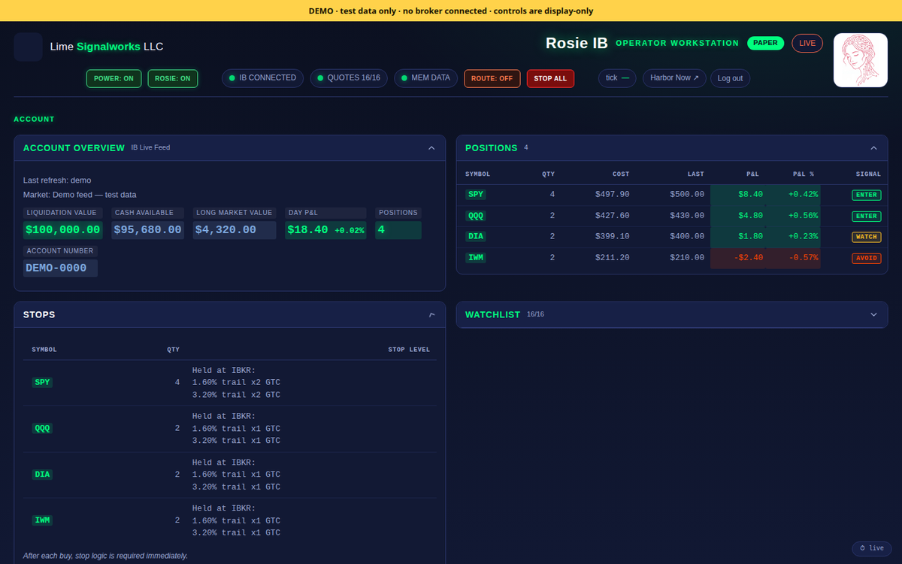

LIME Enterprise
Keelwise: trading decision support that protects capital first
Keelwise (formerly Rosie) is a trading assistant from Lime Signalworks. It watches the market, proposes trades with its reasons, and waits for your approval. Every approved buy goes to your broker with two protective stops already attached. Protecting capital comes first. The decisions stay yours.
Demonstration environment. Simulated data. No broker connection and no real orders. Not production-ready.
Perplexity sign-in may be required.
Section 01
What Lime Signalworks does
Lime Signalworks provides AI-assisted trading and investing support that prioritizes protecting capital before pursuing gains. Individuals and companies face the same problem: making disciplined market decisions under pressure, without outsourcing judgment to someone else's conviction.
We supply the reporting, the structure, and the decision support. We do not take positions for you, and we do not tell you what to buy. The decisions remain yours.

Section 02
Daily market situation report
Each market day we publish a plain-language summary of conditions: index-level moves, volatility, and a stated risk posture. Reports are published after the close and are labelled with their as-of date.
As of the close of Thursday, July 23, 2026
Dated example — not real-time data
| Instrument | Close | Change |
|---|---|---|
| SPY S&P 500 ETF | 738.18 | -1.23% |
| QQQ Nasdaq 100 ETF | 691.96 | -1.90% |
| DIA Dow 30 ETF | 516.26 | -1.00% |
| IWM Russell 2000 ETF | 292.09 | -0.58% |
| VIX Volatility index | 18.70 | +12.38% |
Conditions read bearish. Stated posture: protect first.
This is a worked example of the report format, not current market data. The figures shown are the last completed report carried over from the reporting archive and are dated. Reports are published after the close, never in real time, and live market data may be newer than any published report.
Section 03
What we commit to, and what we do not
We do not guarantee profits and we cannot eliminate risk. No honest provider can.
Markets move in every direction, and your decisions and results are your own. What we commit to is clear instruction, honest tooling, and a system designed to weigh capital preservation ahead of gain.
Section 04
How Keelwise works
Discipline and decision support in one system. Keelwise does the watching and the bookkeeping; you make the call.
-
Step one
It watches
Keelwise samples prices about once a minute and compares each one with its recent average. It also checks the day's stated market posture: on a defensive day, new buys are blocked.
-
Step two
It proposes, you decide
When a price moves clearly above its average, Keelwise proposes a buy and shows its reason. When a holding falls clearly below, it proposes closing. Nothing reaches your broker until you approve it.
-
Step three
Every buy is protected
An approved buy goes out as a limit order priced from a live quote, with two trailing stops held at the broker. The stops are sized from each symbol's measured overnight moves, so ordinary noise does not shake you out, and they keep working even if your computer is off.
- A symbol without measured history is refused, never given a guessed stop.
- A daily loss limit, account checks, and a separate paper/live switch run before any order.
- Every proposal, approval, and order is written to a Journal and a Trade Record you keep.
- Keelwise runs on your own computer. Your broker login stays with your broker.
Section 05
The 33-day evaluation
New users begin with a free 33-day evaluation on an Interactive Brokers paper account: the real Keelwise and real market prices, with no live capital and no real-money orders. We help you set it up. Continuing afterwards is optional.
-
Stage one
Setup and orientation
Learn what the report covers, how the dashboard is laid out, and what each condition flag means before relying on any of it.
-
Stage two
Daily practice
Let Keelwise propose trades on paper each day, approve or decline them, and see the stops and records it keeps.
-
Stage three
Review
Look back over the period and judge what the process did and did not change about your own behaviour and results.
The period is long enough to judge the system on your own behaviour rather than on a sales claim. Nothing in the evaluation touches live money.
See pricing and how to startSection 06
Who this is for
This is built for people and firms that have lost money or confidence trading on impulse, and for those who want a documented process instead of a tip service.
Market mechanics are often described in language that keeps them inaccessible. We explain them plainly and show the reasoning behind each report. We make no claim about outcomes — only about the clarity of the method.
Section 07
Where to start
The sections below cover what the system is, what it reports, what it costs, and how to begin. Start wherever matches your question.
What the system is
The problem it addresses, and how Keelwise works.
Daily market report
The report format, an as-of-close example, and how freshness is labelled.
The 33-day evaluation
How the free evaluation works on an IBKR paper account.
Pricing and what you get
Enrollment prices, what each plan includes, and what it is not.
For brokers and partners
How Keelwise works alongside a broker, and how to start a conversation.
How to begin
Guided setup, partner conversations, or the demo.
Section 08
Pricing and what you get
Start with the free 33-day paper evaluation. If you continue, enrollment is one of the plans below.
Enrollment after the evaluation
| Term | Planned price |
|---|---|
| Monthly | $200 |
| Annually | $1,000 |
Enrollment is arranged directly with us after your evaluation. There is no online checkout, and no payment can be taken on this site.
What each plan includes
- The Keelwise trading assistant, installed on your computer.
- Broker-held protective stops on every approved buy.
- The daily market situation report.
- Alerts that flag when conditions change.
- Guided setup and support.
What this is not
- Not a signal service to copy.
- Not a promise of profit.
- Not personalized investment advice.
- Alerts indicate changed conditions; the decision is yours.
Section 09
For brokers and partners
Keelwise is built to sit alongside a broker, not in place of one. It runs on the customer's own computer, sends orders through the broker's own API, and leaves the broker login with the broker. Protective stops live at the broker, where your systems can see them.
Keelwise is available to brokers and educators who want to offer it to their customers. On request we share a security overview of how Keelwise handles data and orders, and we welcome your security review.
We design our controls around the SOC 2 Trust Services Criteria: security, availability, processing integrity, confidentiality, and privacy. Access, change review, backups, and incident response are written policies. Keelwise has not yet completed a SOC 2 audit; we will pursue one alongside our first broker partner.
Section 10
How to begin
-
Individuals
Book a guided setup
Call or email us. We set up Keelwise with you on an Interactive Brokers paper account and start your 33-day evaluation.
-
Brokers and firms
Start a partner conversation
We walk you through Keelwise, share the security overview, and talk about offering it to the people you serve.
-
Just looking
Open the demo
See the real dashboard with test data before you talk to anyone. A Perplexity sign-in may be required to open it.